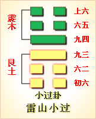

第六十二卦初六爻详解 第六十二卦六二爻详解 第六十二卦九三爻详解
第六十二卦九四爻详解 第六十二卦六五爻详解 第六十二卦上六爻详解
周易第六十二卦 小过 雷山小过 震上艮下
小过：亨，利贞，可小事，不可大事。飞鸟遗之音，不宜上宜下，大吉。
彖曰：小过，小者过而亨也。过以利贞，与时行也。柔得中，是以小事吉也。刚失位而不中，是以不可大事也。有飞鸟之象焉，有飞鸟遗之音，不宜上宜下，大吉;上逆而下顺 也。
象曰：山上有雷，小过;君子以行过乎恭，丧过乎哀，用过乎俭。
初六：飞鸟以凶。象 曰：飞鸟以凶，不可如何也。
六二：过其祖，遇其妣;不及其君，遇其臣;无咎。象曰：不及其君，臣不可过也。
九三：弗过防之，从或戕之，凶。象曰：从或戕之，凶如何也。
九四：无咎，弗过遇之。往厉必戒，勿用永贞。象曰：弗过遇之，位不当也。往厉必戒，终不可长也。
六五：密云不雨，自我西郊，公弋取彼在穴。象曰：密云不雨，已上也。
上六：弗遇过之，飞鸟离之，凶，是谓灾眚。象曰：弗遇过之，已亢也。
小过卦卦象，雷天小过卦的象征意义
小过卦，这个卦是异卦相叠，下卦为艮，上卦为震。艮为山，震为雷。山在下，雷在上。这意味着山上有雷雨，雷雨在山上能把树木击坏，又能使水土流失。虽然如此，山上万物若无雷雨的滋润，就不能生存。相比之下，雷雨所造成的损失，只是雷雨的一种小过失，故本卦被取名为“小过”。
小过卦位于中孚卦之后，《序卦》之中这样解释道：“有其信者必行之，故受之以小过。”有诚信的人一定会行动，在行动时若是把握不住限度，可能就会有小过，所以接着要谈小过。
《象》中这样解释本卦：山上有雷，小过;君子以行过乎恭，丧过乎哀，用过乎俭。这里指出：小过卦的卦象是艮(山)下震(雷)上，为山上响雷之象，雷声超过了寻常的雷鸣，以此比喻“小有过越”，君子应效法“小过”之象，在一些寻常小事上能略有过分，如行止时过分恭敬，遇到丧事时过分悲哀，日常用度过分节俭，为的是矫枉过正。
小过卦象征略为过分，启示的是行动有度的道理，属于中上卦。《象》中这样来断此卦：行人路过独木桥，心内惶恐眼里瞧，爽利保保过得去，慢行一定不安牢。
【小过卦释义】
此卦卦名为小过。《说文》中说：“过，度也。”过的具体含义在大过卦中我们已经讲过了，就是经过、度过、过度、超越的意思。大过卦与小过卦的区别在于“大”与“小”的不同。其相同点是，分别位于上下经的倒数第三卦。《序卦传》中说：“有其信者必行之，故受之以小过。”也就是说，有了符节就可以通过关口，所以中孚卦的后面是小过卦。中孚卦有符契的形象，在古代人们进城时要发给一个符契，另一半放在守门的卫士那里，出城时人们交上符契，守门卫士见与手中的符契相吻合后，才能让人出城。
小过卦卦画：小过卦的卦画为两个阳爻四个阴爻，两个阳爻位于中部，四个阴爻平均分配于上下。小过卦与中孚卦互为覆卦。
小过卦卦象：从卦象上分析，小过卦的整体形象就像一只飞鸟，中间两个阳爻为鸟身，上下四个阴爻为展开的鸟翅，所以有小鸟飞过的形象。从上下卦分析，小过卦上卦为震为雷，下卦为艮为山，山顶响惊雷便是小过卦的卦象。在山顶上，雷声比在平地上要响亮，这惊雷则喻示着对过错的警示。
关键词：周易,小过卦,雷山小过,震上艮下
小过卦：亨通，吉利的占问。对小事有利，对大事不利。飞鸟经过，叫声还留在耳际。对大人不利，对小人有利。大吉大利。
初六：飞鸟经过，带来凶兆。
六二：祖父可以批评，祖母可以称赞。君王也有缺点，臣子 也可以夸奖。没有灾祸。
九三：不要过分指责，但要防止错误发展。倘若放任不管，就是害他。凶险。
九四：没有错误，就不要指责，而要夸奖。日后有出错的危险，一定要防止。不利于占间长久的吉凶。
六五：在我西边郊野上空，阴云密布，雨却没有下来。王公射鸟，却在洞穴抓到野兽。
上六：对没有错的人不表扬，反而批评，像网罗网飞鸟，凶险，这就叫灾祸。
①小过是本卦的标题。“过”有经过和责备两个意思，全卦的内容主要是 讲对批评的看法。标题的“过”字是卦中的多见词。由于前面已有“大过 卦”，所以这一卦叫“小过”。
②可：有利于。小事：周代祭祀和战争是 大事，其它都是小事。
③遗：留下。音：鸟的叫声。
④以：带来。
⑤过：责备，批评。祖：祖父。
(6)遇：礼遇，“过”的反义词。批 (bI)：祖母。
(7)不及：赶不上，有缺点。
(8)从：用作“纵”，意思是 放纵，听任。戕(qiang) ：伤害。
(9)无咎：这里的意思是没有过错。
(10)勿用：不利于。
(11)弋(yi)：射鸟。
(12)彼：这里指代野兽。
(13) 离：用作“罗”，意思是网，指捕鸟的网。